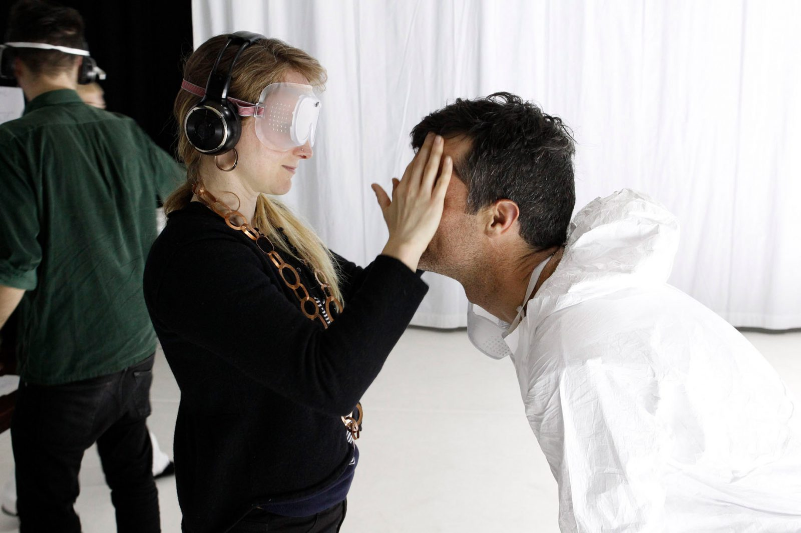

Bureau
of
works_
2/5
‘Imagined Touch’, Jodee Mundy Collaborations, 2016.
Photo: Jeff Busby
Bureau of Works is an independent producing company founded by Erin Milne. We are focused on creating strategic opportunities for artists; supporting artists in the creation of new work and exploratory form; and developing contexts that foster risk-taking and ambition. We’re interested in projects that encompass radical empathy, collaborative teams, good humour and a sense of adventure.
We enjoy working closely with artists to realise the environment, resources and partners they need to achieve their best work. We also work with organisations to do the same thing, in different contexts. Our services include: producing, market development, event curation, strategic planning, facilitation, project management, research, grant writing, and tenders.
People
Erin Milne
Executive Producer
Erin has extensive experience as a producer of live and interdisciplinary performance, both independently and in organisations. In 2013 she established Bureau of Works, drawing on her years of experience in the arts and cultural industry.
She has worked across a range of artforms including festivals, radio, new media, visual art, music, and writing; and with organisations on strategic planning, business development and project management. Recently, she worked with City of Melbourne to establish Yirramboi, a new First Nations Arts Festival, as well as a range of participatory arts projects for the city.
In addition to current artists and projects, she has also worked with: ABC RN, Aphids Inc, Arts House, Arts West, Born in a Taxi, Bunk Puppets, Chamber Made Opera, Dance Massive, Deakin University, Festival of Live Art, Footscray Community Arts Centre, Human Rooms, Lemony S Puppet Theatre, Lucy Guerin Inc, Mira Calix (UK), Moreland City Council, Nat Cursio, PAC Australia, Performing Lines, Real TV, Regional Arts Victoria, Ridiculusmus (UK), Too Close to the Sun (Canada) and The Substation. Prior to establishing Bureau of Works, she was Executive Producer of Arena Theatre Company from 2005 – 2013. Erin is currently a Sessional Academic Lecturer at Deakin University, Board Member of Chamber Made Opera, and participant of the current cohort of the Australia Council’s Arts Leaders Program.
Claire Portek
Producer
Claire joins Bureau of Works with a wealth of experience producing and programming for festivals, venues and independent companies across the country. Most recently, she was Executive Producer of Aphids Inc. As inaugural Program Manager at Dark Mofo, she was responsible for programming for the first three iterations of the festival. Claire has worked in programming for both Melbourne Recital Centre and Sydney Opera House (including the inaugural Vivid Live, Luminous Festival and Festival of Dangerous Ideas), as well as producing new work for Darwin Festival.
Producing contemporary & experimental art for the here and now. Bureau of Works fosters distinctive voices and ambitious ideas.